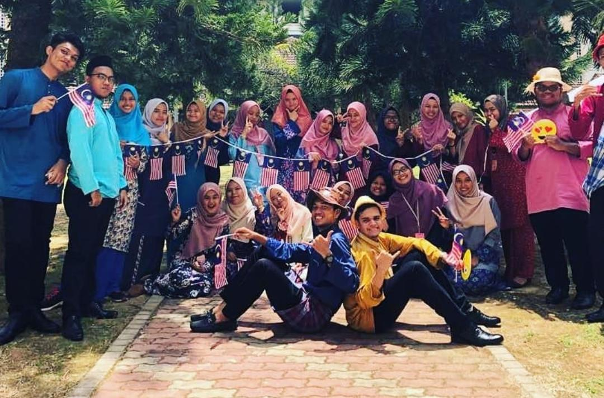
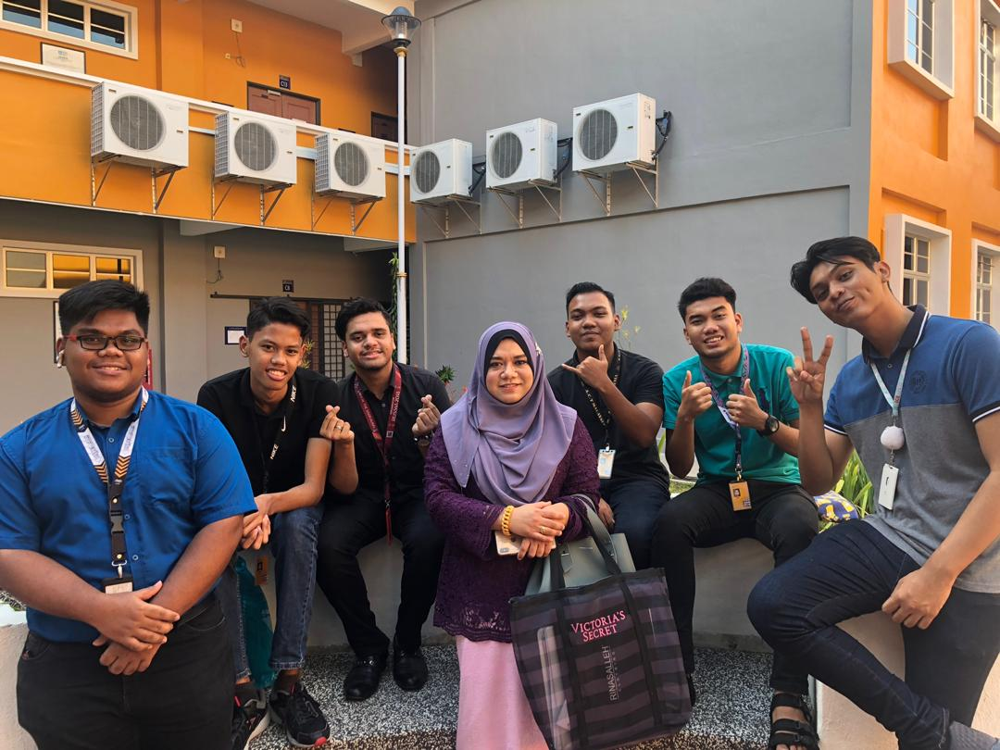
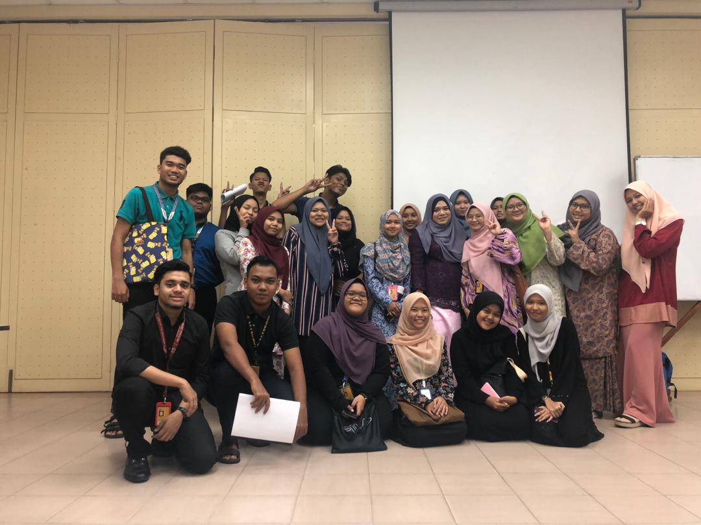
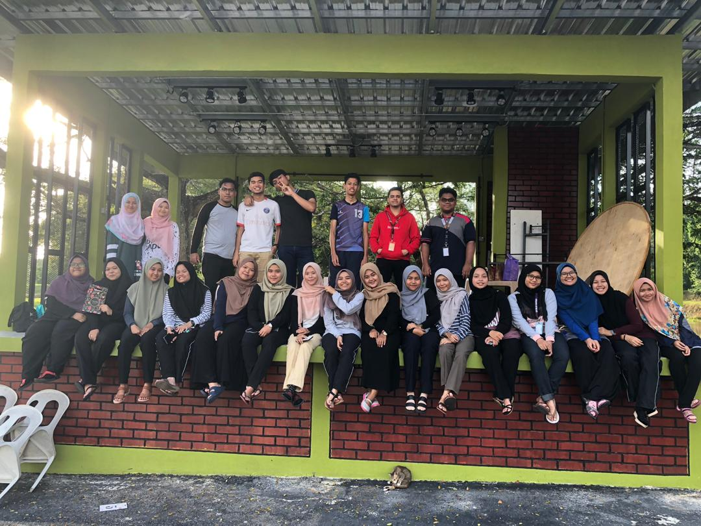
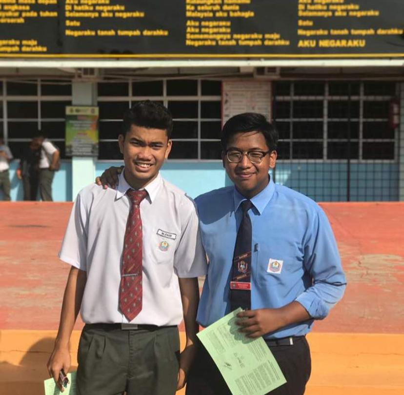
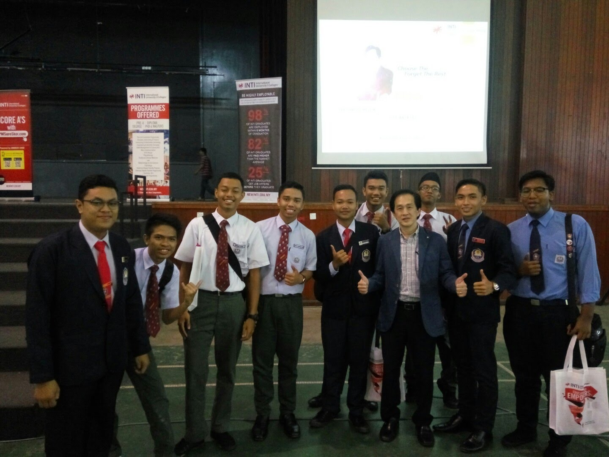
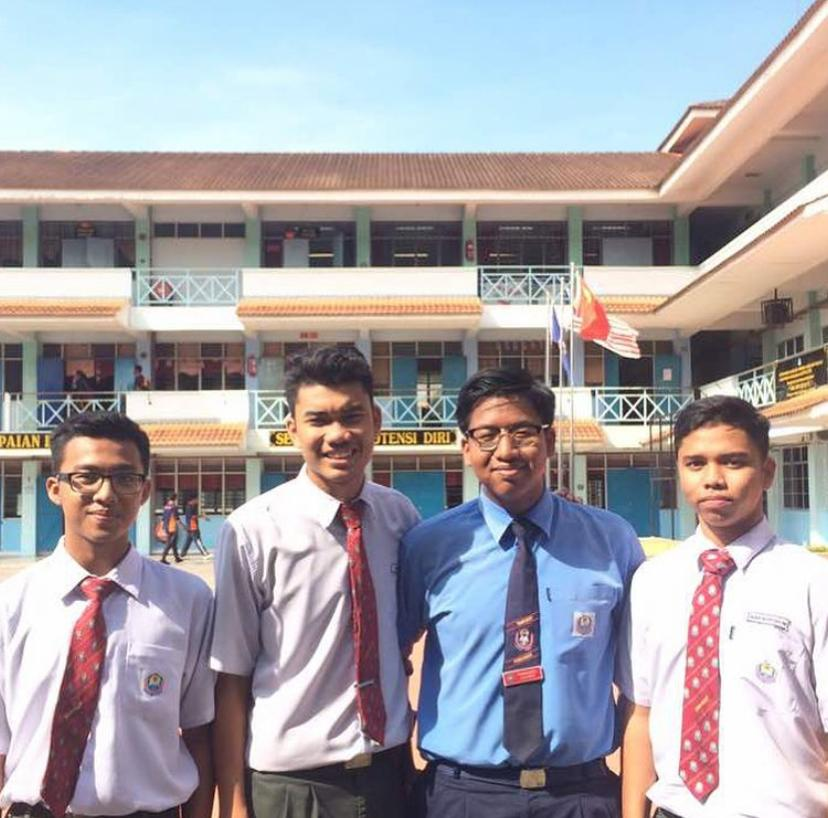

This website is purposely for IMD311 Individual assingment
Education
Diploma Level UiTM Kedah




After I finished my SPM, alhamdulillah I has been offered to continue study in information management at UiTM.at first, i don't really happy about it but when i spend my life at here, it began to start changing my heart and i like to live and study at here with all my new friends. Now I am already in university vibe. I learned so many things that teach me so much in life. I will never forget this moment because it was the great moment for me. Unfortunately I cannot spend my last semester with my entire classmate because of Covid-19. But it’s not problem because we need to accept what was happen and try to find another way. Alhamdulillah I can spend my last semester with them even just in online.
Education
I graduate from SMK Bandar Sungai Petani




I graduated my secondary school at SMK Bandar Sungai petani. It was the best moment for me since the first day I get into form 1 until form 5. All the challenges has been through together until we success together. Alhamdulillah with the dua from all my family, teachers and friends I finished my SPM with flying colours. It was the best moment ever because I want to show to my parent that I can give the best for them. Do not forget my teachers friends, there are also give 100% support until where am I now